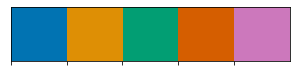
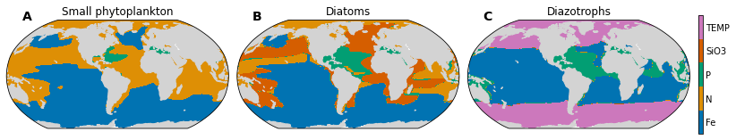

Nutrient Limitation¶
Compute biomass-weighted-mean limitation terms in the upper ocean (i.e., top 150 m).
Make 3 panel plot: maps of most limiting nutrient for each phytoplankton taxa (diatom, small phyto, diazotrophs).
%matplotlib inline
import os
import cftime
import xarray as xr
import numpy as np
import matplotlib.pyplot as plt
import matplotlib.gridspec as gridspec
import matplotlib.colors as colors
from matplotlib.colors import ListedColormap
import seaborn as sns
import cartopy
import cartopy.crs as ccrs
import intake
import intake_esm
import ann_avg_utils as aau
import ncar_jobqueue
from dask.distributed import Client
import xpersist as xp
# Set up xperist cache
cache_dir = os.path.join(os.path.sep, 'glade', 'p', 'cgd', 'oce', 'projects', 'cesm2-marbl', 'xpersist_cache')
if (os.path.isdir(cache_dir)):
xp.settings['cache_dir'] = cache_dir
xp_dir = 'nutrient_limitation'
os.makedirs(os.path.join(xp.settings['cache_dir'], xp_dir), exist_ok=True)
import utils
# MCL: commenting this out, getting type error
#%load_ext watermark
#%watermark -a "Mike Levy" -d -iv -m -g -h
/glade/work/mclong/miniconda3/envs/co2-hole/lib/python3.7/site-packages/ncar_jobqueue/cluster.py:31: UserWarning: Unable to determine which NCAR cluster you are running on... Using an instance of `distributed.LocalCluster` class.
'Unable to determine which NCAR cluster you are running on... Using an instance of `distributed.LocalCluster` class.'
cluster, client = utils.get_ClusterClient()
cluster.scale(12) #adapt(minimum_jobs=0, maximum_jobs=24)
client
/glade/work/mclong/miniconda3/envs/co2-hole/lib/python3.7/site-packages/distributed/dashboard/core.py:79: UserWarning:
Port 8787 is already in use.
Perhaps you already have a cluster running?
Hosting the diagnostics dashboard on a random port instead.
warnings.warn("\n" + msg)
Client
|
Cluster
|
global_vars = aau.global_vars()
exp = 'cesm2_hist'
time_slices = global_vars['time_slices']
experiment_dict = global_vars['experiment_dict']
%%time
temp_thres_diaz = 15.
def _get_all_limitation_vars(autotroph):
catalog = intake.open_esm_datastore('data/campaign-cesm2-cmip6-timeseries.json',
sep=':')
darrays = []
nutrient_dim = []
for nutrient in nutrients:
if (autotroph, nutrient) not in omit:
if nutrient == 'TEMP':
var = 'TEMP'
da = catalog.search(
experiment=experiment_dict[exp][1],
variable=var
).to_dataset_dict(
cdf_kwargs={'chunks':{'time' : 180}}
)['ocn:historical:pop.h'].drop(['ULAT', 'ULONG']).sel(
time=time_slices[exp],
).isel(
z_t=0,
drop=True,
)[var].mean(['time', 'member_id'])
da = xr.where(da > temp_thres_diaz, 1., 0.)
darrays.append(da)
else:
var = f'{autotroph}_{nutrient}_lim_Cweight_avg_100m'
print(f'Reading data for {var}')
# Looking at historical run
darrays.append(
catalog.search(
experiment=experiment_dict[exp][1],
variable=var
).to_dataset_dict(
cdf_kwargs={'chunks':{'time' : 180}}
)['ocn:historical:pop.h'].drop(['ULAT', 'ULONG']).sel(
time=time_slices[exp]
)[var].mean(['time', 'member_id'])
)
variables.append(var)
nutrient_dim.append(nutrient)
else:
print(f'Will not pair {autotroph} and {nutrient}')
datasets = xr.concat([da.to_dataset(name=f'{autotroph}_lim') for da in darrays], dim='nutrient')
datasets['nutrient'] = nutrient_dim
return(datasets.compute())
variables = []
nutrients = ['P', 'Fe', 'N', 'SiO3', 'TEMP']
omit = [('sp', 'SiO3'), ('diaz', 'SiO3'), ('diaz', 'N'), ('sp', 'TEMP'), ('diat', 'TEMP')]
darrays = dict()
datasets = dict()
dsets_plot = dict()
for autotroph in ['sp', 'diat', 'diaz']:
xp_func = xp.persist_ds(_get_all_limitation_vars, name=f'{xp_dir}/{autotroph}_lim', trust_cache=True)
datasets[autotroph] = xp_func(autotroph)
dsets_plot[autotroph] = utils.pop_add_cyclic(datasets[autotroph])
datasets
assuming cache is correct
reading cached file: /glade/p/cgd/oce/projects/cesm2-marbl/xpersist_cache/nutrient_limitation/sp_lim.nc
assuming cache is correct
reading cached file: /glade/p/cgd/oce/projects/cesm2-marbl/xpersist_cache/nutrient_limitation/diat_lim.nc
Reading data for diaz_P_lim_Cweight_avg_100m
--> The keys in the returned dictionary of datasets are constructed as follows:
'component:experiment:stream'
100.00% [1/1 00:00<00:00]
Reading data for diaz_Fe_lim_Cweight_avg_100m
--> The keys in the returned dictionary of datasets are constructed as follows:
'component:experiment:stream'
100.00% [1/1 00:00<00:00]
Will not pair diaz and N
Will not pair diaz and SiO3
--> The keys in the returned dictionary of datasets are constructed as follows:
'component:experiment:stream'
100.00% [1/1 00:00<00:00]
writing cache file: /glade/p/cgd/oce/projects/cesm2-marbl/xpersist_cache/nutrient_limitation/diaz_lim.nc
CPU times: user 4.85 s, sys: 534 ms, total: 5.38 s
Wall time: 1min 44s
{'sp': <xarray.Dataset>
Dimensions: (nlat: 384, nlon: 320, nutrient: 3)
Coordinates:
TLONG (nlat, nlon) float64 320.6 321.7 322.8 323.9 ... 318.9 319.4 319.8
TLAT (nlat, nlon) float64 -79.22 -79.22 -79.22 ... 72.2 72.19 72.19
* nutrient (nutrient) object 'P' 'Fe' 'N'
Dimensions without coordinates: nlat, nlon
Data variables:
sp_lim (nutrient, nlat, nlon) float32 nan nan nan nan ... nan nan nan nan,
'diat': <xarray.Dataset>
Dimensions: (nlat: 384, nlon: 320, nutrient: 4)
Coordinates:
TLONG (nlat, nlon) float64 320.6 321.7 322.8 323.9 ... 318.9 319.4 319.8
TLAT (nlat, nlon) float64 -79.22 -79.22 -79.22 ... 72.2 72.19 72.19
* nutrient (nutrient) object 'P' 'Fe' 'N' 'SiO3'
Dimensions without coordinates: nlat, nlon
Data variables:
diat_lim (nutrient, nlat, nlon) float32 nan nan nan nan ... nan nan nan nan,
'diaz': <xarray.Dataset>
Dimensions: (nlat: 384, nlon: 320, nutrient: 3)
Coordinates:
TLONG (nlat, nlon) float64 320.6 321.7 322.8 323.9 ... 318.9 319.4 319.8
TLAT (nlat, nlon) float64 -79.22 -79.22 -79.22 ... 72.2 72.19 72.19
* nutrient (nutrient) <U4 'P' 'Fe' 'TEMP'
Dimensions without coordinates: nlat, nlon
Data variables:
diaz_lim (nutrient, nlat, nlon) float64 nan nan nan nan ... 0.0 0.0 0.0 0.0}
dsets_aligned = xr.align(*[ds for ds in dsets_plot.values()], join='outer', fill_value=100.)
dsets_plot = {k: ds for k, ds in zip(['sp', 'diat', 'diaz'], dsets_aligned)}
dsets_plot
{'sp': <xarray.Dataset>
Dimensions: (nlat: 384, nlon: 321, nutrient: 5)
Coordinates:
* nutrient (nutrient) object 'Fe' 'N' 'P' 'SiO3' 'TEMP'
Dimensions without coordinates: nlat, nlon
Data variables:
TLAT (nlat, nlon) float64 -79.22 -79.22 -79.22 ... 80.31 80.31 80.31
TLONG (nlat, nlon) float64 -220.6 -219.4 -218.3 ... -39.29 -39.57 -39.86
sp_lim (nutrient, nlat, nlon) float32 nan nan nan ... 100.0 100.0 100.0,
'diat': <xarray.Dataset>
Dimensions: (nlat: 384, nlon: 321, nutrient: 5)
Coordinates:
* nutrient (nutrient) object 'Fe' 'N' 'P' 'SiO3' 'TEMP'
Dimensions without coordinates: nlat, nlon
Data variables:
TLAT (nlat, nlon) float64 -79.22 -79.22 -79.22 ... 80.31 80.31 80.31
TLONG (nlat, nlon) float64 -220.6 -219.4 -218.3 ... -39.29 -39.57 -39.86
diat_lim (nutrient, nlat, nlon) float32 nan nan nan ... 100.0 100.0 100.0,
'diaz': <xarray.Dataset>
Dimensions: (nlat: 384, nlon: 321, nutrient: 5)
Coordinates:
* nutrient (nutrient) object 'Fe' 'N' 'P' 'SiO3' 'TEMP'
Dimensions without coordinates: nlat, nlon
Data variables:
TLAT (nlat, nlon) float64 -79.22 -79.22 -79.22 ... 80.31 80.31 80.31
TLONG (nlat, nlon) float64 -220.6 -219.4 -218.3 ... -39.29 -39.57 -39.86
diaz_lim (nutrient, nlat, nlon) float64 nan nan nan nan ... 0.0 0.0 0.0 0.0}
current_palette = sns.color_palette('colorblind', 5)
cmap = ListedColormap(current_palette.as_hex())
sns.palplot(current_palette)

fig = plt.figure(figsize=(12,3.5))
gs = gridspec.GridSpec(nrows=1, ncols=4, width_ratios=(1, 1, 1, 0.02))
prj = ccrs.Robinson(central_longitude=305.0)
ocn_mask = np.where(np.isnan(dsets_plot['sp']['sp_lim'].isel(nutrient=0).data), False, True)
levels = np.arange(6)
norm = colors.BoundaryNorm(levels, ncolors=5)
current_palette = sns.color_palette('colorblind', 5)
cmap = ListedColormap(current_palette.as_hex())
autotroph_names = dict(
sp='Small phytoplankton',
diat='Diatoms',
diaz='Diazotrophs',
)
maps = []
for n, autotroph in enumerate(['sp', 'diat', 'diaz']):
ds = dsets_plot[autotroph]
da = ds[f'{autotroph}_lim']
ax = fig.add_subplot(gs[0, n], projection=prj)
maps.append(ax)
ax.set_title(autotroph_names[autotroph], fontsize=12)
pc = ax.contourf(ds['TLONG'].data,
ds['TLAT'].data,
da.argmin(dim='nutrient', skipna=False).where(ocn_mask).data+0.5,
levels=levels,
norm=norm,
cmap=cmap,
transform=ccrs.PlateCarree())
land = ax.add_feature(
cartopy.feature.NaturalEarthFeature(
'physical','land','110m',
edgecolor='face',
facecolor='lightgray'
)
)
# add colorbar
gs.update(left=0.05, right=0.95, hspace=0.05, wspace=0.05)
cax_vert_shrink = 0.7
cbar_ax = plt.subplot(gs[0, -1])
p0 = cbar_ax.get_position()
shift_up = p0.height * (1. - cax_vert_shrink) / 2
cbar_ax.set_position([p0.x0, p0.y0 + shift_up, p0.width, p0.height * cax_vert_shrink])
cbar = fig.colorbar(pc, cax=cbar_ax, ticks=levels+.5, orientation='vertical')
cbar.ax.set_yticklabels([f'{nutrient}' for nutrient in dsets_plot['sp'].nutrient.values]);
cbar.ax.tick_params(length=0);
utils.label_plots(fig, maps, xoff=0.02, yoff=0)
utils.savefig('nutrient-limitation-maps.pdf')
